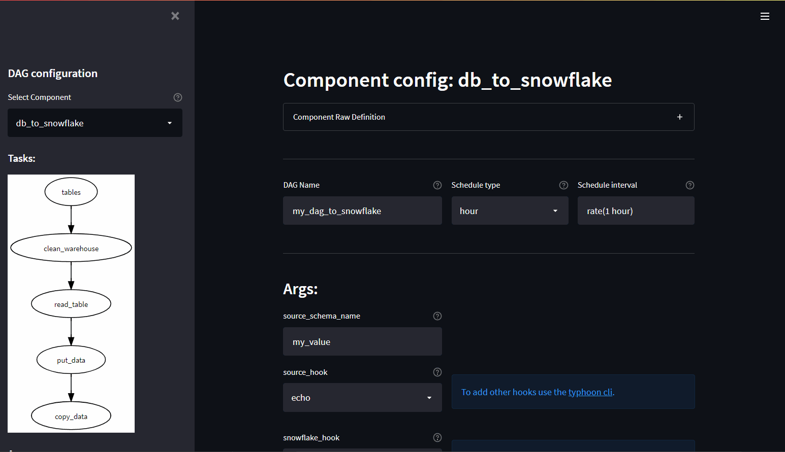

Using Components
What is a component?
Components are ways of packaging sets of regularly used tasks. This encourages modularity and re-use.
This page focuses on using some packaged example components (rather than how to construct one).
Included components:
- Glob & Compress: To glob (e.g. '*.csv') files and compress them to gzip or zlib.
- FileSystem to DB: To read (glob) files on a schedule into an existing table.
- DB to FileSystem: To write a table to a file pattern.
- DB to Snowlfake: Multiple tables landed to snowflake (idempotent with added DHW staging metadata). Fully end-to-end production ready flow.

See the next section for using the Component UI.
Example: Archive on Mondays
Trivial example to choose a different path based on if its a Monday.
$DAG_CONTEXT.ts is a datetime object representing the timestamp of runtime in the context.
Calling component: typhoon.if imports the template structure defined in the component YAML. Your constributed components would be referenced component: components.my_component.
This if component defines two outputs. These are accessed in the line choose_preprocessing.then and choose_preprocessing.else.
name: conditional_process
schedule_interval: rate(10 minutes)
tasks:
list_files:
function: typhoon.filesystem.list_directory
args:
hook: !Hook ftp
path: '/'
choose_preprocessing:
input: list_files
component: typhoon.if
args:
data: !Py $BATCH
condition: !Py $DAG_CONTEXT.ts.isoweekday() == 0
monday_processing_task:
input: choose_preprocessing.then
function: functions.my_process_monday
args:
data: !Py $BATCH
otherday_processing_task:
input: choose_preprocessing.else
function: functions.my_process_other_day
args:
data: !Py $BATCH
...
Example: Source DB to Snowflake DWH
This is a non-trivial example of a full DWH load from multipler tables across 3 separate ERP systems.
This calls the entire end to end flow that is packaged in the typhoon.db_to_snowflake flow. This component example is fully idempotent with added DHW staging metadata.
Note even more productive is to have the table names as typhoon variables, keeping the YAML very clean and easy to read. We have kept this simple for the example by using a list.
name: source_to_snowflake
schedule_interval: rate(1 day)
tasks:
erps:
function: typhoon.flow_control.branch
args:
branches:
- name: sku_component_erp
hook: !Hook ERP
tables:
- sku_list
- sku_component
- build_master
- builds
- component_extended_desc
- name: transactions_erp
hook: !Hook trans_ERP
tables:
- transactions
- client_master
- shipping
- supplers
- deliveries
- factory_productivity
- name: finance_erp
hook: !Hook fin_erp
tables:
- payables
- recievables
- reconciliations
- cost_to_serve
get_erp:
component: typhoon.db_to_snowflake
args:
source_name: !Py $BATCH['name']
source_hook: !Py $BATCH['hook']
snowflake_hook: !Hook data_warehouse
quote_tables: true
source_tables: !Py $BATCH['tables']